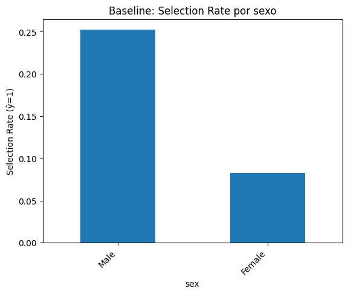
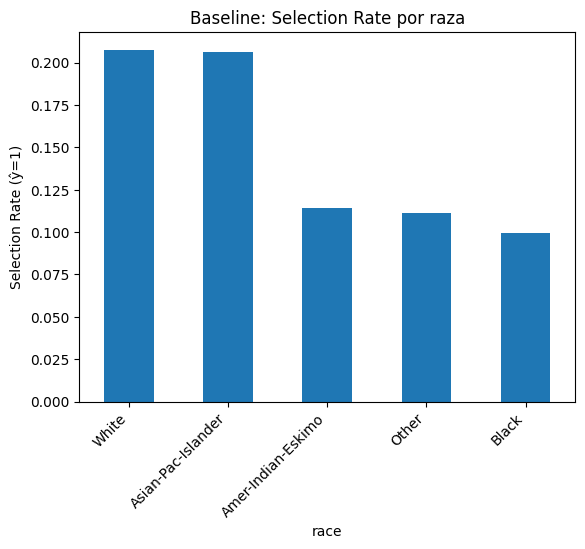

La Inteligencia Artificial se ha consolidado como una herramienta capaz de transformar industrias, optimizar procesos y mejorar la vida de las personas. No obstante, el uso de sistemas de IA conlleva un riesgo importante: la reproducción y, en ocasiones, la amplificación de desigualdades sociales preexistentes. Estas desigualdades pueden aparecer porque los datos contienen sesgos de origen histórico, porque los algoritmos están diseñados de manera que favorecen ciertos resultados, o porque la interpretación humana de los modelos carece de un análisis crítico de equidad.
El marco de IA Responsable, que se articula en torno a los principios conocidos como FAT o FATE, busca enfrentar estos riesgos. La equidad consiste en evitar que un sistema discrimine injustamente a individuos o grupos en función de atributos sensibles como el género o la raza. La responsabilidad apunta a establecer mecanismos claros para monitorear y corregir errores o sesgos. La transparencia exige que los modelos sean comprensibles y que las decisiones puedan ser auditadas, mientras que la ética procura que la IA se alinee con valores humanos y persiga un beneficio social.
En este trabajo se aplican dichos principios al análisis del conjunto de datos Adult Census Income, disponible en la UCI Machine Learning Repository. El objetivo de este dataset es predecir si una persona percibe un ingreso anual mayor a 50,000 dólares, utilizando información demográfica como edad, género, raza, educación u ocupación. Este conjunto resulta especialmente pertinente porque es conocido por reflejar desigualdades salariales históricas entre hombres y mujeres, así como entre diferentes grupos raciales.
El proyecto persigue varios objetivos: explorar los datos e identificar posibles fuentes de sesgo, entrenar un modelo predictivo de referencia, evaluar si el modelo hereda o amplifica las desigualdades observadas en los datos, aplicar estrategias de mitigación para reducir las disparidades y reflexionar sobre los riesgos éticos de utilizar modelos de este tipo en contextos reales.
El análisis exploratorio permitió identificar de manera preliminar las fuentes de sesgo presentes en los datos. La variable objetivo, que corresponde al nivel de ingresos, muestra un fuerte desbalance: más de tres cuartas partes de los individuos (75.9%) ganan menos de 50,000 dólares al año, mientras que apenas el 24.1% supera este umbral. Este desbalance, aunque reflejo de la realidad socioeconómica, implica que el modelo se enfrentará a una tarea de clasificación desequilibrada, lo que puede dificultar la identificación precisa de los casos minoritarios.
En cuanto a los atributos sensibles, se observa que el 66.9% de los registros corresponden a hombres y el 33.1% a mujeres. Desde el punto de vista racial, el 85.4% de los individuos se identifican como blancos, mientras que el 9.6% son negros y el resto se distribuye en proporciones mucho menores entre asiáticos, amerindios y la categoría “otros”. Esto implica que tanto las mujeres como las minorías raciales se encuentran sobrerrepresentadas en las categorías de menor ingreso, lo cual constituye una posible fuente de sesgo.
Al desagregar los ingresos por grupo se confirma esta situación. Entre los hombres, el 30.6% gana más de 50,000 dólares, mientras que entre las mujeres esta proporción cae drásticamente al 10.9%. La disparidad también se evidencia entre grupos raciales: el 25.6% de los blancos superan el umbral de ingresos, frente al 12.4% de los negros, el 11.6% de los amerindios y apenas el 9.2% de quienes se encuentran en la categoría “otros”. Estos resultados confirman que los datos de entrenamiento reflejan desigualdades estructurales y que, de no intervenirse, un modelo predictivo basado en este conjunto reproduciría dichas inequidades en sus predicciones.
El modelo de referencia consistió en una regresión logística, precedida de un preprocesamiento que incluyó la estandarización de variables numéricas y la codificación One Hot para las categóricas. En el conjunto de prueba, este modelo alcanzó una exactitud del 85.4%, una precisión de 74.2%, un recall de 60.5% y una puntuación F1 de 66.7%. El área bajo la curva ROC fue de 0.90, lo cual indica una buena capacidad de discriminación general.
Tabla 1. Métricas globales del modelo baseline
| Accuracy | Precision | Recall | F1 | ROC AUC |
|---|---|---|---|---|
| 0.854 | 0.742 | 0.605 | 0.667 | 0.900 |
Sin embargo, las métricas globales ocultan las disparidades entre grupos. Al segmentar por sexo, se encontró que el modelo predice ingresos altos para el 25.2% de los hombres, pero únicamente para el 8.2% de las mujeres. De manera similar, al segmentar por raza, el 20.8% de los blancos son clasificados como ganadores de más de 50,000 dólares, mientras que la proporción cae al 9.9% en negros y a aproximadamente un 11% en otras minorías.
Tabla 2. Métricas por sexo (baseline)
| Grupo | Accuracy | Precision | Recall | F1 | Selection Rate | TPR | FPR |
|---|---|---|---|---|---|---|---|
| Female | 0.929 | 0.733 | 0.551 | 0.629 | 0.082 | 0.551 | 0.025 |
| Male | 0.818 | 0.744 | 0.615 | 0.673 | 0.252 | 0.615 | 0.093 |

Tabla 3. Métricas por raza (baseline)
| Grupo | Accuracy | Precision | Recall | F1 | Selection Rate | TPR | FPR |
|---|---|---|---|---|---|---|---|
| Amer-Indian-Eskimo | 0.873 | 0.444 | 0.444 | 0.444 | 0.114 | 0.444 | 0.071 |
| Asian-Pac-Islander | 0.825 | 0.698 | 0.561 | 0.622 | 0.206 | 0.561 | 0.084 |
| Black | 0.914 | 0.681 | 0.557 | 0.612 | 0.099 | 0.557 | 0.036 |
| Other | 0.937 | 0.429 | 1.000 | 0.600 | 0.111 | 1.000 | 0.067 |
| White | 0.848 | 0.750 | 0.609 | 0.672 | 0.208 | 0.609 | 0.070 |

Las métricas de disparidad confirman estas brechas. En el caso del sexo, la diferencia de paridad demográfica (dp_diff) alcanzó un valor de 0.169, mientras que el ratio de paridad fue de apenas 0.327, lo que significa que las mujeres tienen un tercio de las oportunidades de ser clasificadas con ingresos altos en comparación con los hombres. El indicador de igualdad de oportunidades (eo_diff) fue de 0.068, lo que refleja diferencias significativas en la tasa de verdaderos positivos. En el caso de la raza, los valores fueron igualmente preocupantes: dp_diff de 0.108, dp_ratio de 0.478 y eo_diff de 0.556.
Estos resultados permiten concluir que el modelo baseline no solo refleja las desigualdades de los datos, sino que contribuye a amplificarlas en sus predicciones.
Con el fin de reducir estas disparidades se implementaron tres enfoques distintos. El primero fue la técnica de Equalized Odds mediante el algoritmo de Exponentiated Gradient, que busca balancear las tasas de verdaderos positivos y falsos positivos entre grupos sensibles. Con esta técnica, la disparidad en sexo se redujo de un eo_diff de 0.068 a 0.031, mientras que en raza se redujo de 0.556 a 0.323. La exactitud global se mantuvo relativamente estable, aunque se observó una ligera disminución en el recall, lo que muestra que la técnica logra equidad a costa de sacrificar parcialmente la capacidad de identificación de los casos positivos.
La segunda estrategia consistió en el ajuste de umbrales diferenciados por grupo con el objetivo de alcanzar la paridad demográfica. Se estableció un umbral de 0.60 para hombres y de 0.16 para mujeres. Esta decisión redujo la disparidad de género casi a cero, logrando un dp_diff de apenas 0.003. Sin embargo, la exactitud global del modelo descendió de 0.854 a 0.831, lo que pone de relieve la tensión entre equidad y desempeño. Además, al aplicar la misma estrategia en raza, la mejora fue más modesta.
La tercera estrategia aplicada fue Reweighing, que asigna pesos a las observaciones de acuerdo con la distribución conjunta de atributos sensibles e ingresos. En este caso, la disparidad racial se redujo de un eo_diff de 0.556 a 0.333, manteniendo estables las métricas globales de desempeño, con una exactitud cercana al 85%. Esta técnica resultó especialmente útil porque logra un equilibrio razonable sin afectar de manera significativa la calidad predictiva del modelo.
Tabla 4. Disparidades por sexo
| Modelo | dp_diff | dp_ratio | eo_diff |
|---|---|---|---|
| Baseline | 0.169 | 0.327 | 0.068 |
| Eq. Odds | 0.104 | 0.506 | 0.031 |
| Thresholding | 0.003 | 0.985 | 0.319 |
| Reweighing | 0.118 | 0.428 | 0.333 |
Tabla 5. Disparidades por raza
| Modelo | dp_diff | dp_ratio | eo_diff |
|---|---|---|---|
| Baseline | 0.108 | 0.478 | 0.556 |
| Eq. Odds | 0.110 | 0.407 | 0.323 |
| Thresholding | 0.012 | 0.941 | 0.455 |
| Reweighing | 0.118 | 0.428 | 0.333 |
La comparación de las distintas estrategias muestra que no existe una solución única ni perfecta. En el caso del género, el ajuste de umbrales fue la técnica más efectiva para eliminar la disparidad en paridad demográfica, aunque sacrificó exactitud. Equalized Odds ofreció un balance más moderado, reduciendo de manera significativa las desigualdades sin afectar tanto las métricas globales. Reweighing, por su parte, mostró un desempeño intermedio, con mejoras aceptables y estabilidad en el rendimiento general.
Tabla 6. Comparación sexo: baseline vs Equalized Odds
| Grupo | Accuracy Before | Accuracy After | Recall Before | Recall After | F1 Before | F1 After | Selection Rate Before | Selection Rate After |
|---|---|---|---|---|---|---|---|---|
| Female | 0.929 | 0.908 | 0.551 | 0.568 | 0.629 | 0.576 | 0.082 | 0.107 |
| Male | 0.818 | 0.812 | 0.615 | 0.537 | 0.673 | 0.636 | 0.252 | 0.211 |
En el caso de la raza, Equalized Odds y Reweighing demostraron ser más efectivos que el ajuste de umbrales. Ambas técnicas redujeron el eo_diff de más de 0.55 a valores entre 0.32 y 0.33, lo que representa una mejora sustancial, aunque las disparidades no se eliminan por completo. El ajuste de umbrales, en cambio, tuvo un impacto limitado y no logró equiparar de forma adecuada la probabilidad de clasificación entre grupos raciales.
Tabla 7. Comparación raza: baseline vs Equalized Odds
| Grupo | Accuracy Before | Accuracy After | Recall Before | Recall After | F1 Before | F1 After | Selection Rate Before | Selection Rate After |
|---|---|---|---|---|---|---|---|---|
| Amer-Indian-Eskimo | 0.873 | 0.861 | 0.444 | 0.222 | 0.444 | 0.267 | 0.114 | 0.076 |
| Asian-Pac-Islander | 0.825 | 0.829 | 0.561 | 0.530 | 0.622 | 0.614 | 0.206 | 0.187 |
| Black | 0.914 | 0.903 | 0.557 | 0.545 | 0.612 | 0.578 | 0.099 | 0.108 |
| Other | 0.937 | 0.889 | 1.000 | 0.333 | 0.600 | 0.222 | 0.111 | 0.095 |
| White | 0.848 | 0.838 | 0.609 | 0.544 | 0.672 | 0.631 | 0.208 | 0.185 |
El análisis realizado confirma que los sesgos en los datos constituyen un riesgo real para los sistemas de IA. El dataset Adult Census Income refleja inequidades estructurales: los hombres y las personas blancas aparecen sobrerrepresentados en los niveles de ingreso alto. El modelo baseline, sin mitigación, hereda estas desigualdades y las refleja en sus predicciones, generando resultados discriminatorios para las mujeres y para las minorías raciales.
Las técnicas de mitigación aplicadas muestran que es posible reducir estas disparidades, aunque siempre existen compromisos entre equidad y precisión. Equalized Odds demostró ser una opción sólida para mejorar la equidad sin un costo excesivo en rendimiento. El ajuste de umbrales mostró que puede eliminar casi por completo la disparidad en género, pero no ofrece la misma efectividad en raza y sacrifica exactitud global. Reweighing se presentó como una estrategia intermedia que mantiene el desempeño general del modelo y reduce de manera importante las disparidades raciales.
Más allá de los resultados técnicos, este ejercicio invita a reflexionar sobre los riesgos de aplicar estos modelos en contextos reales. Si un sistema de este tipo se utilizara para procesos de contratación laboral, aprobación de créditos o asignación de beneficios, podría reforzar desigualdades históricas y generar un impacto negativo sobre grupos ya desfavorecidos. Esto subraya la importancia de no limitar la solución al plano algorítmico, sino acompañarla con medidas organizacionales y políticas públicas. Es necesario mejorar la recolección de datos para garantizar una representación más balanceada, realizar auditorías periódicas de equidad y asegurar que la decisión final siempre contemple la supervisión humana y principios éticos de no discriminación.
En conclusión, la aplicación de técnicas de mitigación permite avanzar hacia sistemas de IA más justos y responsables. Sin embargo, ninguna técnica elimina completamente los sesgos, lo que obliga a reconocer que la equidad es un objetivo que requiere tanto intervenciones técnicas como compromisos institucionales y sociales.